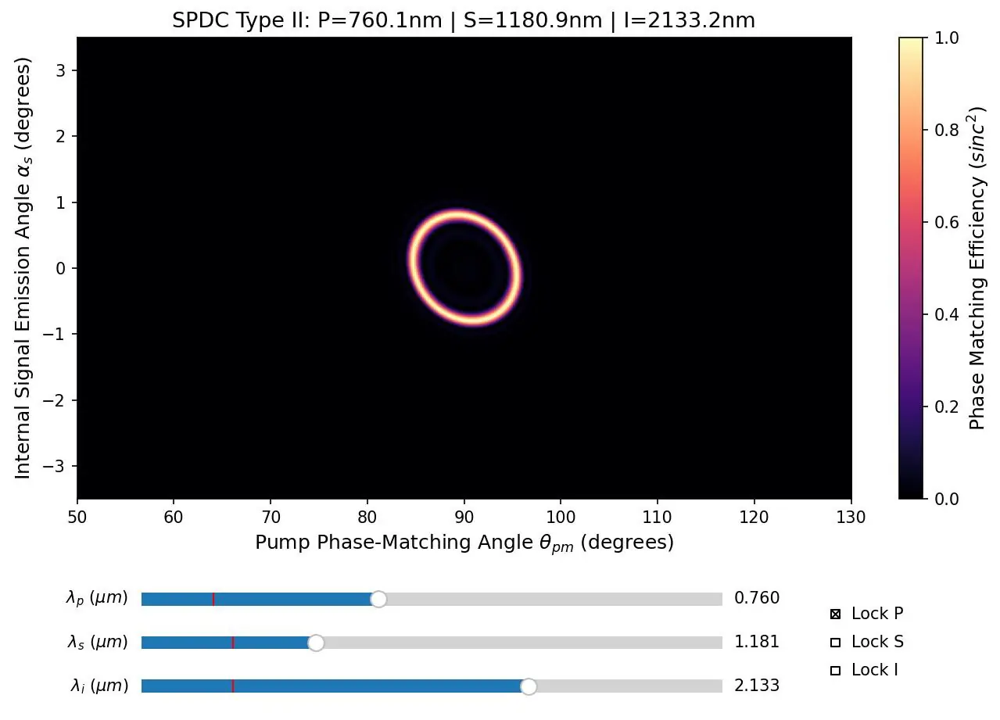
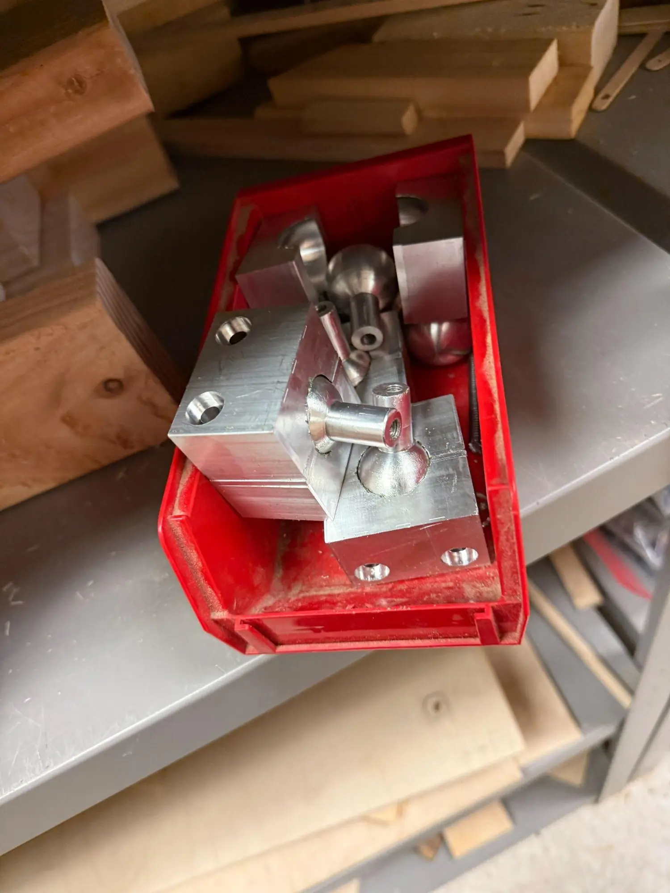

I design mechanical systems, model the physics behind them, and machine the parts myself.
I’m Daniel Nelson, a chemical engineering student at UC Irvine. My work so far: a valvetrain redesign for a Formula SAE engine breathing through a 20 mm restrictor, a two-axis motion platform with CNC-machined ball joints, and phase-matching models for nonlinear optics. Three years in a machine shop underpin all of it.
- Engineer
- Daniel Nelson
- Program
- B.S. Chemical Engineering, Energy & Sustainability · Minor, Materials Science
- Teams
- Anteater Formula Racing · ChemE Car · UCI Materials Research Institute
- Practice
- Powertrain · Manufacturing · Materials & optics · Energy · Computation
Intake airflow gain from a 30° valve back-cut, Formula SAE Yamaha R6.
Modeled · CFDLess intake valvetrain friction at 16,000 rpm (6.0 → 4.1 hp), from softer springs and a lower-lift cam.
Modeled · MATLABChemE Car, Western Regional at UCSB, on a 12 V lead-acid battery built from raw materials.
ResultHackers at VTHacks 14. GameSense won Best Hack to Promote Diversity, Equity & Inclusion.
Award
Sheet 01 · Powertrain · 2026 · Anteater Formula Racing
Valvetrain redesign for a restricted Yamaha R6
Formula SAE forces all intake air through a single 20 mm restrictor. Over ten weeks I measured the stock engine and modeled its valvetrain in MATLAB. Then I redesigned the cam and valve seat around that limit and checked the design with CFD and FEA before any metal was cut.
Combustion-chamber model error vs. OEM geometry
ModeledFEA safety factor, redesigned 6.5 mm lobe (stock 1.29)
Modeled · FEA


Sheet 02 · Systems · 2024 · Team of two
Two-axis hydraulic flight simulator
Two of us built a motion platform from scratch, from equations to a working prototype. The prototype demonstrated the concept to a laboratory director to secure funding for the hydraulic version.
- Flight simulatorX-Plane
- UDP packetsPython
- Inverse kinematicsderived by hand
- Driver circuitcustom PCB
- Solenoid valvesactuators
- Platformpitch + roll
Sheet 03 · Research · 2025 · UCI Materials Research Institute
Nonlinear optics in lithium niobate and 2D materials
Entangled photon pairs only appear when pump, signal and idler satisfy a narrow phase-matching condition. I built Python models that find those conditions in LiNbO3, including an interactive map that locks any one wavelength and solves for the rest. I also helped with measurements in the lab.
- Research papers reviewed~75
- Processes studiedSPDC · SHG · SFWM
- SimulationPython · Lumerical · Mechanical

P = 760.1 nm · S = 1180.9 nm · I = 2133.2 nm. Ring brightness = phase-matching efficiency (sinc²).

Project register
Every project, in the order it started.
Filled dots mark the disciplines each project actually involved. Filter by discipline, or open any row.
| No. | Project | Started | DesignManufacturingPowertrainThermal-fluidsMaterialsElectrochemComputation | Status |
|---|---|---|---|---|
| S-04 | Manufacturing & fabricationThree years in an integrated machinist program: CNC, CAM, waterjet, welding and laser cutting. Projects include a guitar, a gearbox car and a trebuchet. | 2022 | Built | |
| S-05 | Gas go-kartLed a student build team as Automotive Engineering Club president. I built the fuel system, clutch and chain tensioner and did the welding. | 2023 | Built | |
| S-02 | Two-axis hydraulic flight simulatorHand-derived inverse kinematics, Python over UDP, a solenoid driver circuit and CNC ball joints, built as a ¼-scale pneumatic prototype. | 2024 | Prototype | |
| S-10 | Fuel-cell catalyst literature reviewPt-based multimetallic catalysts (PtCoNiRuIr) and High Temperature Liquid Shock Synthesis, with exposure to UV/VIS, FTIR, ICP-MS and SEM. | 2025 | Literature | |
| S-08 | Fourier / Laplace transform visualizerA web app that shows Fourier series, the complex plane and epicycles for any signal you type in. | 2025 | Laplace in dev. | |
| S-03 | Nonlinear optics & 2D materials researchSPDC phase-matching models for LiNbO3, assistance with interferometry and SHG experiments, and about 75 papers reviewed. | 2025 | Ongoing | |
| S-06 | ChemE Car lead-acid batteryA 12 V lead-acid battery built from raw materials. It placed 3rd in the first round and 6th of 20+ at Western Regionals. | 2025 | Result | |
| S-11 | Hydrogen–oxygen ignition modelConstant-volume kinetics model built on a 19-step mechanism with Troe falloff. More than 64,000 solves map ignition in three dimensions. | 2025 | Modeled | |
| S-09 | Supercritical Energy LLCEnergy systems engineering internship: thermodynamic and heat-flow simulation, CFD, materials work and the company’s public website. | 2026 | NDA | |
| S-01 | Valvetrain redesign, Yamaha R6Measured baseline, MATLAB valve-dynamics model, CFD and FEA, a cam specification and in-house valve back-cuts. | 2026 | Modeled · part built | |
| S-07 | GameSense impact-sensing cleatA sensor grid mapped onto a cleat, ESP32 over Wi-Fi and an app that scores each kick. Built at VTHacks 14. | 2026 | Award | |
| S-12 | Electrolysis dry cellA miniature dry cell to supply oxyhydrogen to a small motorcycle engine. Initial CAD done and components purchased. | 2026 | In development |
From model to part
Three years in a machine shop means designs get made, not just drawn.
The flight simulator’s ball joint, start to finish. I generated the toolpaths in CAM, cut the parts on a CNC mill and lathe from 6061 aluminum, and checked the fit by hand.

Where the threads meet
None of these began as hydrogen projects. Several of them lead there anyway.
The R6 taught me valve timing and port flow, ChemE Car taught me electrochemistry, and the optics research taught me numerical modeling. My hydrogen–oxygen ignition model is where those overlap. It is a constant-volume kinetics simulator built on a 19-step elementary mechanism, and more than 64,000 solves map how ignition delay responds to spark temperature, pressure and mixture.
A miniature dry-cell electrolyzer for oxyhydrogen
The cell is designed to supply oxyhydrogen to a small motorcycle engine. Initial CAD and component selection are done and several parts are purchased; system integration is being worked out. Once it runs, the ignition model gives me a way to choose operating conditions and valve timing deliberately rather than by trial.